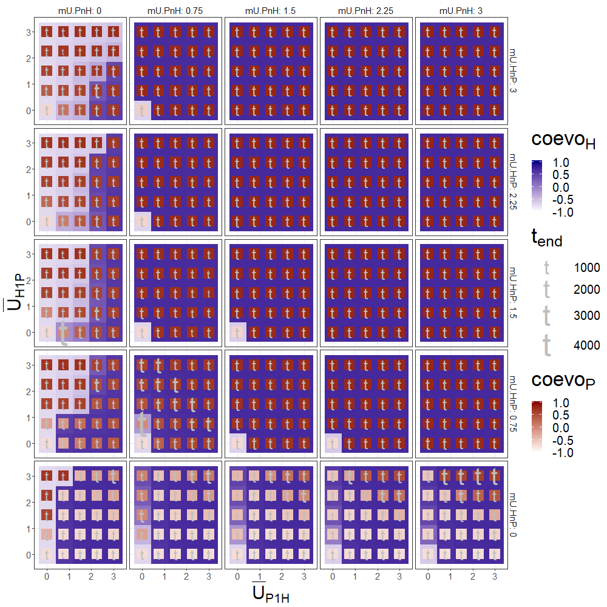
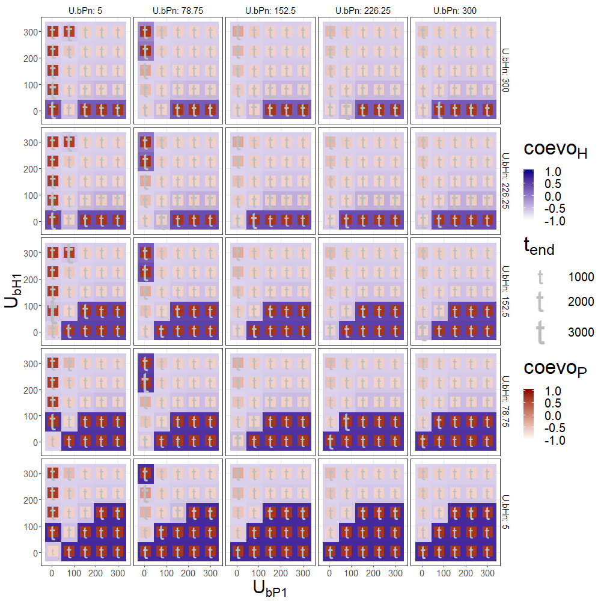
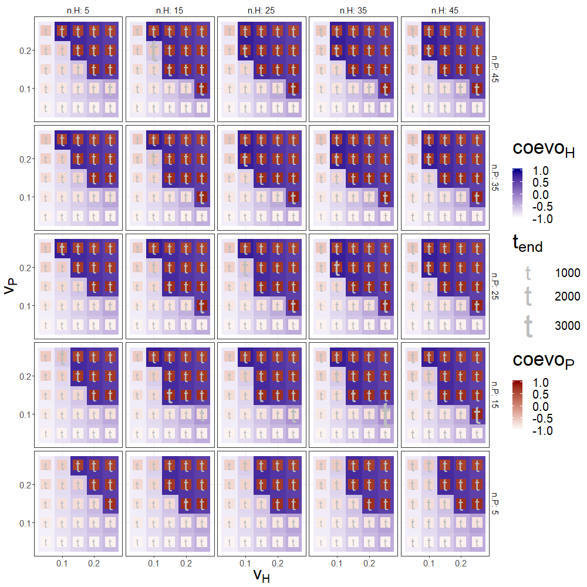

Chapter 5 Four parameter exploration
5.1 Utility per capita between humans and plants (\(\bar{U}_{H_{1}P}\) x \(\bar{U}_{P_{1}H}\) x \(\bar{U}_{H_{n}P}\) x \(\bar{U}_{P_{n}H}\))
| parameter | value |
|---|---|
| iniH | 10 |
| iniP | 10 |
| n.H | 30 |
| n.P | 30 |
| v.H | 0.15 |
| v.P | 0.15 |
| r.H | 0.04 |
| r.P | 0.1 |
| mU.PnH | 0 - 2.5 (sample = 5 ) |
| mU.HnP | 0 - 2.5 (sample = 5 ) |
| mU.P1H | 0 - 2.5 (sample = 5 ) |
| mU.H1P | 0 - 2.5 (sample = 5 ) |
| U.bHn | 10 |
| U.bPn | 20 |
| U.bH1 | 80 |
| U.bP1 | 100 |
| MaxArea | 200 |

Interpretation:
* Higher values of all four parameters facilitate coevolution; under the ‘default’ setting, a value around 1 is enough for all four parameters (intermediate values in this exploration).
* Coevolution is still possible if any single one of these parameters equal zero (bottom-left corners). Under this type of conditions, agriculture (blue) appears more probable than domestication (red), and the latter is strongly dependent on a non-null \(\bar{U}_{H_{n}P}\).
* As a summary of possible end-states:
+ ‘Fast’ coevolution (red square in blue tile, small t): most cases when values are greater than 0.625.
+ Domestication without cultivation (red square in whitish tile): most cases when \(\bar{U}_{H_{n}P}>0.625\), \(\bar{U}_{H_{1}P}\geq 0.625\), \(\bar{U}_{P_{n}H}=0\), and \(\bar{U}_{P_{1}H}<2.5\).
+ Cultivation without domestication (whitish square in blue tile): most cases when \(\bar{U}_{H_{n}P} = 0\).
5.2 Utility from other resources to humans and plants (\(U_{bH_{1}}\) x \(U_{bP_{1}}\) x \(U_{bH_{n}}\) x \(U_{bP_{n}}\))
For this experiment, consider that the default setting includes \(MaxArea=200\) (i.e. the maximum for the plant population).
| parameter | value |
|---|---|
| iniH | 10 |
| iniP | 10 |
| n.H | 30 |
| n.P | 30 |
| v.H | 0.15 |
| v.P | 0.15 |
| r.H | 0.04 |
| r.P | 0.1 |
| mU.PnH | 1.5 |
| mU.HnP | 1 |
| mU.P1H | 0.15 |
| mU.H1P | 0 |
| U.bHn | 5 - 300 (sample = 5 ) |
| U.bPn | 5 - 300 (sample = 5 ) |
| U.bH1 | 5 - 300 (sample = 5 ) |
| U.bP1 | 5 - 300 (sample = 5 ) |
| MaxArea | 200 |

Interpretation:
- Lower values of all four parameters facilitate coevolution; under the ‘default’ setting and for all four parameters, values higher than \(MaxArea\) (here, 200) impede coevolution. The human parameters (\(U_{bH_{1}}\), \(U_{bH_{n}}\)), together regulating the scale of the subsistence alternatives for humans, are significantly more important; their relationship (if one is greater than the other) seems to be less important as long as their combined sum is small enough.
* Coevolution is likely to occur when \(U_{bH_{1}}=5\), unless \(U_{bH_{1}}\) is too big and \(U_{bP_{1}}\) is too small.
* As a summary of possible end-states:
+ ‘Fast’ coevolution (red square in blue tile, small t): most cases when \(U_{bH_{1}}\) and \(U_{bH_{n}}<152.5\).
+ Domestication without cultivation (red square in whitish tile): most cases when \(U_{bP_{n}}=5\), \(U_{bP_{1}}=5\) (i.e. there is very little carrying capacity for plants beyond the anthropic space) and \(U_{bH_{1}}>5\) (i.e. humans get enough of other resources when -still- not engaged in agriculture).
+ Cultivation without domestication (whitish square in blue tile): no cases are visible under these conditions.
5.3 Number of types and undirected variation of humans and plants (\(n_{H}\) x \(n_{P}\) x \(v_{H}\) x \(v_{P}\))
| parameter | value |
|---|---|
| iniH | 10 |
| iniP | 10 |
| n.H | 5 - 45 (sample = 5 ) |
| n.P | 5 - 45 (sample = 5 ) |
| v.H | 0.05 - 0.25 (sample = 5 ) |
| v.P | 0.05 - 0.25 (sample = 5 ) |
| r.H | 0.04 |
| r.P | 0.1 |
| mU.PnH | 1.5 |
| mU.HnP | 1 |
| mU.P1H | 0.15 |
| mU.H1P | 0 |
| U.bHn | 10 |
| U.bPn | 20 |
| U.bH1 | 80 |
| U.bP1 | 100 |
| MaxArea | 200 |

Interpretation:
* Higher values of all four parameters facilitate coevolution. Undirected variation has a stronger effect than number of types.
* As a summary of possible end-states:
+ ‘Fast’ coevolution (red square in blue tile, small t): most cases when the numbers of types (\(n_{H}\), \(n_{P}\)) are greater than 15 and values of undirected variation (\(v_{H}\), \(v_{P}\)) higher than 0.15.
+ ‘Semi-domestication’ without cultivation (redish square in whitish tile): cases when \(v_{P}\geq 0.15\).
+ ‘Semi-cultivation’ without domestication (whitish square in blue tile): cases when \(v_{H}\geq 0.15\).